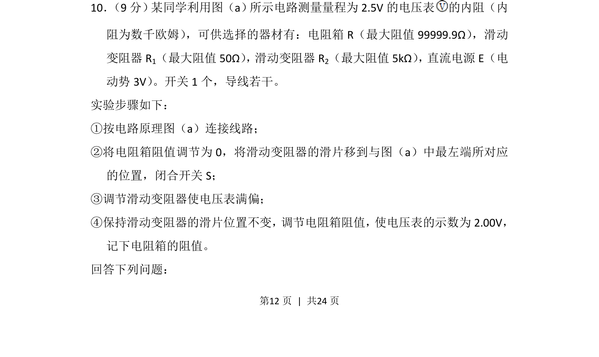
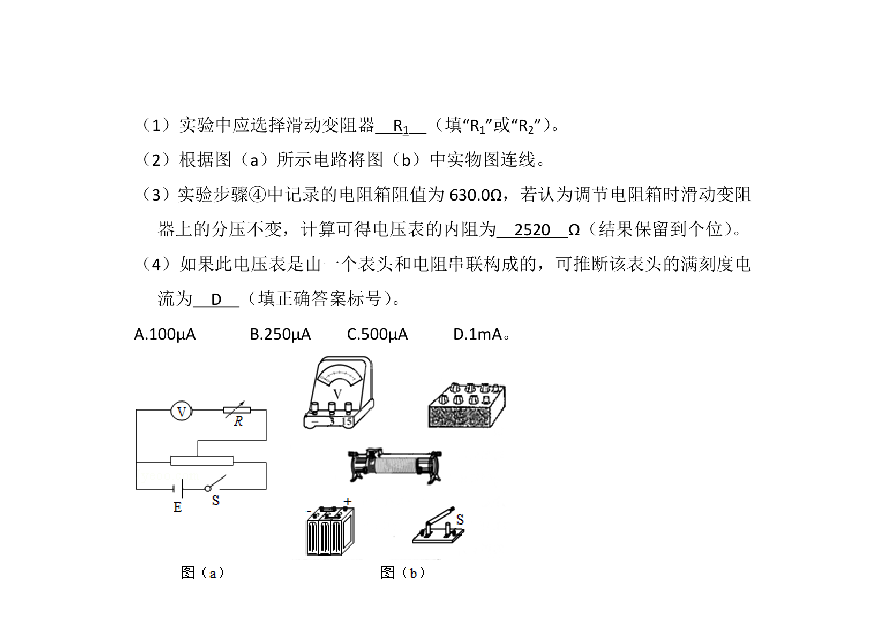
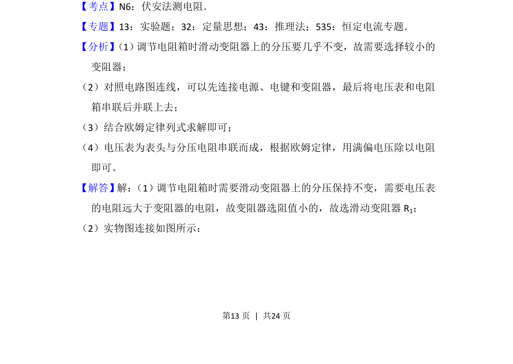
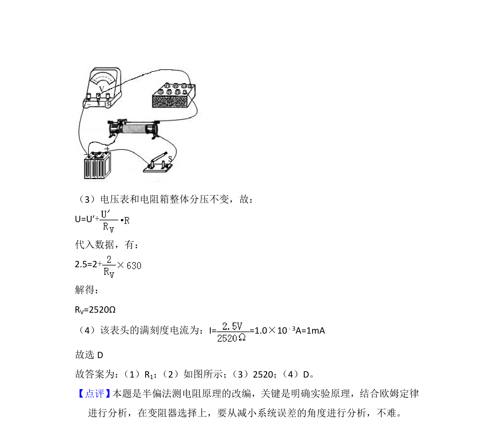

考点：半偏法 电压表内阻 闭合电路欧姆定律 分压接法


利用半偏法测量电压表内阻，考查分压电路与闭合电路欧姆定律的应用。


📄 原 PDF 第 12 页：
素材/真题/吉林/2008-2024·（吉林）物理高考真题/2016年高考物理试卷（新课标Ⅱ）（解析卷）.pdf
10． （9分） 某同学利用图（a） 所示电路测量量程为2.5V的电压表 的内阻（内 阻为数千欧姆） ，可供选择的器材有：电阻箱R（最大阻值99999.9Ω） ，滑动 变阻器R 1（最大阻值50Ω） ， 滑动变阻器R2（最大阻值5kΩ） ， 直流电源E（电 动势3V） 。开关1个，导线若干。 实验步骤如下： ①按电路原理图（a）连接线路； ②将电阻箱阻值调节为0，将滑动变阻器的滑片移到与图（a）中最左端所对应 的位置，闭合开关S； ③调节滑动变阻器使电压表满偏； ④保持滑动变阻器的滑片位置不变， 调节电阻箱阻值， 使电压表的示数为2.00V， 记下电阻箱的阻值。 回答下列问题：